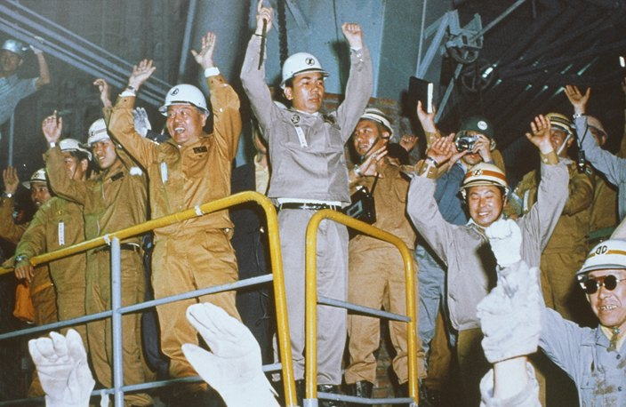
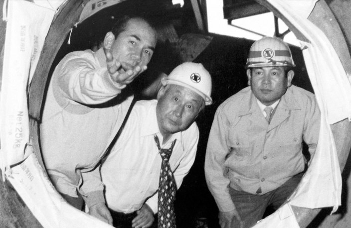
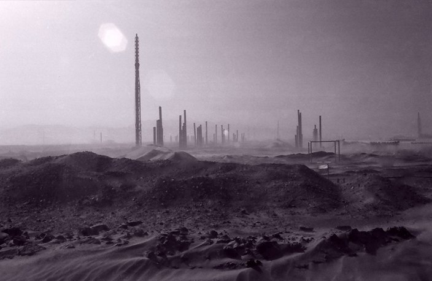
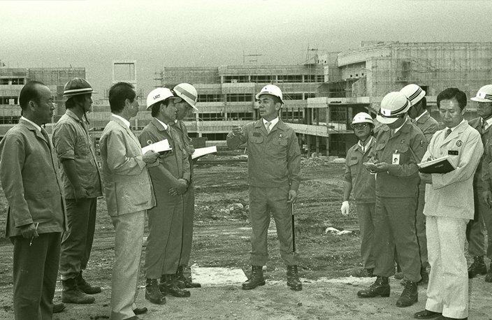
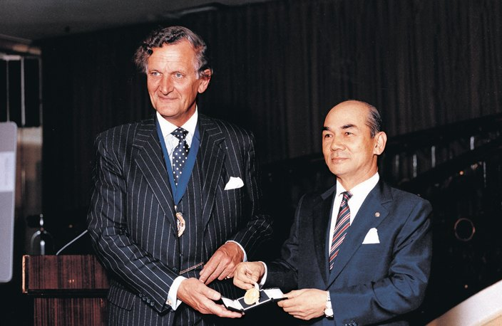
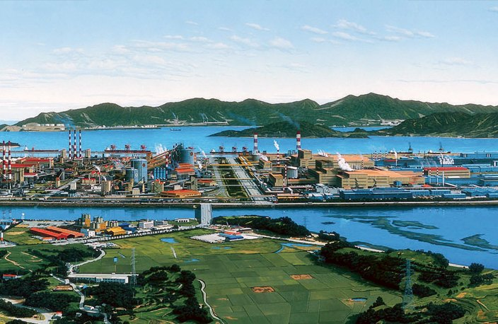
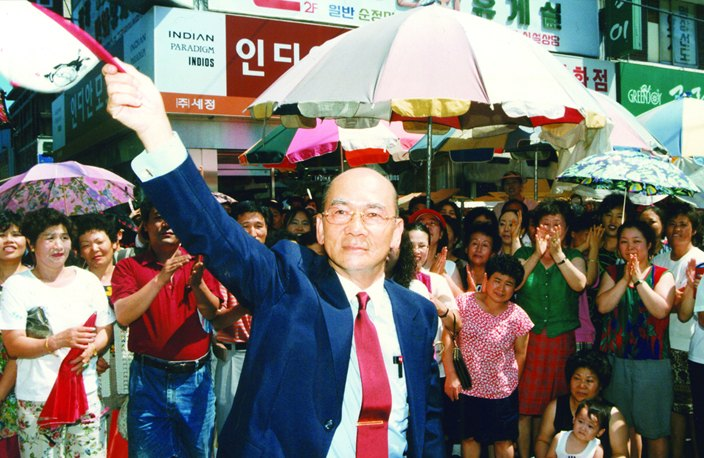
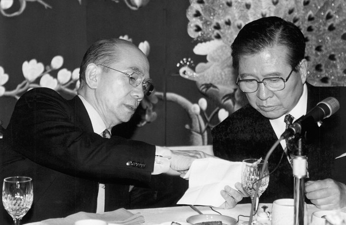

1927년 경남 임랑리에서 태어나 2011년 12월 영면하기까지, 청암 박태준이 걸어온 85년을 시대별로 정리했습니다.
1927~1960
출생에서 군인의 길까지
임랑리에서 태어나 일본에서 자랐고, 광복 뒤 육군사관학교를 거쳐 6·25전쟁과 군의 요직을 지나며 스스로를 단련한 시기.
- 1927
경남 동래구 장안면 (현 부산시 기장군 장안읍) 임랑리에서 박봉관(父)과 김소순(母)의 6남매 중 장남으로 출생(음력 9월29일)
- 19325세
아버지 박봉관 도일.
- 19336세
어머니와 도일. 이후 일본에서 유년시절, 학창시절을 보내며 성장.

일본 중학교 시절 - 194518세
와세다대 기계공학과 입학.

와세다대학 입학 무렵의 박태준 - 194619세
와세다대 기계공학과 2년 중퇴.
- 194821세
부산 국방경비대 훈련 중 조선경비사관학교(육군사관학교) 6기 생도로 선발. 제2중대장으로 탄도학을 강의하는 박정희와 초면. 6개월 단기과정 수료 후 육군 소위로 임관(7월 28일).
- 195023세
6ㆍ25전쟁 발발. 미아리에서 한강 이남으로 철수하라는 명령을 받고 후퇴, 8월에 포항 형산강전투 참전. 이후 북진하여 청진까지 올라갔다가 1ㆍ4후퇴 대열에 오름.
- 195326세
전쟁 중에 충무무공훈장, 은성화랑무공훈장, 금성화랑무공훈장 받음. 휴전 후 육군대학 입교.

무공훈장을 받는 박태준 - 195427세
육군대학 수석졸업 후 육사 교무처장 부임, 12월 20일 장옥자와 결혼.

신혼시절의 박태준 부부 - 195528세
육군 대령으로 진급
- 195629세
국방대학원 입교. 수료 후 국방대학원 국가정책수립담당 제2과정 책임교수 부임. 11월 국방부 인사과장으로 전임.

국방대학 교수 시절의 박태준 (앞줄 가운데) - 195730세
10월 박정희 장군(1군단 참모장)과 재회.
- 195831세
25사단 71연대장으로 국군의 날 시가행진 부대 지휘. 육군본부 인사처리과장 부임.
- 195932세
도미시찰단장으로 미국 방문.

박태준(앞줄 맨 가운데)이 인솔한 도미시찰단이 미국 공항에 내린 모습 - 196033세
부산군수기지사령부 사령관 박정희의 인사참모. 박정희 좌천 후 두 번째 도미. 미국 육군부관학교 3개월 연수.
1961~1970
제철소를 향한 준비
국가재건최고회의와 대한중석을 거쳐 종합제철건설사업추진위원장을 맡고, 영일만에 포항종합제철을 세우기까지.
- 196134세
육군본부 경력관리기구 위원으로 근무 중 5ㆍ16발발, 5월16일 아침부터 계엄사령부 요원 근무. 국가재건최고회의 의장 비서실장, 재정경제위원회 상공담당 최고위원. 구라파통상사절단장으로 유럽 방문, 산업실태 시찰.

구라파 통상사절단을 인솔하고 베를린장벽 앞에 선 박태준 (1961년) - 196235세
제1차 경제개발 5개년계획 수립에 참여, 무연탄 개발을 통한 국토녹화사업 적극 건의.
- 196437세
박정희의 강력한 요청으로 미국 유학 포기 후 일본 특사로 홋카이도에서 규슈까지 일본 전역 10개월간 순방. 야스오카와 초면, 대한중석 사장으로 발령(12월8일).
- 196538세
황경노, 노중열, 홍건유 등 대한중석 합류, 대한중석 1년 만에 흑자체제로 전환. 가와사키제철소 사장 청와대로 초청, 박정희가 피츠버그를 방문해 코퍼스사 포이 회장과 종합제철 건설에 대한 의사 교환(5월26일).
- 196740세
종합제철건설사업추진위원장에 임명.

포항종합제철 건설을 경축하는 포항시민들 (1967년 10월) - 196841세
‘포항종합제철주식회사’사명 확정(영문 약자표기 ‘POSCO’) 및 유네스코회관에서 창립식(4월1일) 개최, 초대 사장 취임. 영일만에 건설사무소(롬멜하우스) 개설. 공장부지 조성공사 착수. 사원주택단지 매입 및 건설 착공.

공사현장을 둘러보려고 롬멜하우스를 나서는 박태준과 박정희(첫줄 맨 오른쪽), 1968년 11월 12일 - 197043세
대일청구권자금 전용의 하와이 구상 실현(1969년), 박정희가 설비구매에 관한 재량권 위임(종이마패).

박정희 대통령의 친필 서명, 종이마패 (1970년 2월 2일)
1971~1980
영일만의 신화
제1고로 첫 출선과 포항종합제철 준공, 그리고 제2제철소 입지를 광양만으로 확정하기까지 한국 철강산업의 뼈대를 세운 시기.
- 197144세
재단법인 제철장학회 설립.
- 197346세
제1고로 첫 출선 성공(6월 9일), 포항종합제철 준공(7월 3일). 조강 연산 103만 톤 체제의 한국 최초 종합제철소 출범.

첫 출선에 감동하여 만세를 외치는 박태준(가운데)과 직원들 - 197548세
사단법인한국철강협회 설립 및 초대회장 취임.
- 197851세
현대와의 제2제철소 실수요자 경쟁에서 포철이 실수요자로 확정됨. 동아일보 ‘올해의 인물’로 선정.

건설 중인 제3고로 풍구에서 언론인 선우휘(가운데)에게 설명하는 박태준 (1978년) - 198053세
국보위 입법회의 제1경제위원장, 한일의원연맹 한국 측 회장 피선. 제2제철소 입지를 광양만으로 확정.
1981~1990
광양, 그리고 포스텍
광양제철소 착공과 포항공과대학교·RIST 설립으로 “교육과 연구”라는 또 하나의 축을 세운 시기.
- 198356세
광양제철소 준설매립공사 착공.

POSCO 광양제철소 준설 매립공사 - 198659세
포항공과대학교(포스텍) 개교.

대학 건설현장 순시 (1986년 8월) - 198760세
포스텍 첫 입학식. 재단법인 포항산업과학연구원(RIST) 창립. 광양 1기 설비 종합준공, 영국금속학회 제114회 베서머금상(5월 13일) 수상.

영국금속학회 애터튼 회장에게서 베서머 금상을 받는 박태준 (1987년 5월 13일) - 198861세
제13대 국회의원 민정당 비례대표 당선.
- 199063세
민정당 대표 취임. 민주자유당(민자당) 출범 및 최고위원 취임.
1991~2000
대역사의 완성과 그 이후
4반세기 대역사를 준공하고 포철을 떠난 뒤, 해외 유랑과 정계 복귀를 거쳐 국무총리에 이르기까지.
- 199164세
포스텍 제1회 졸업식.
- 199265세
광양 4기 설비 종합준공 및 ‘포항제철 4반세기 대역사 준공’(연산 조강 2천100만 톤 체제 확립). 포철 회장 사임 및 명예회장 추대, 정계은퇴.

광양제철소 전경 - 199366세
해외 유랑 시작.
- 199770세
포항시 북구 국회의원 보궐선거 당선. DJT연대, 자민련 총재 취임.

국회의원 보궐선거(포항 북구)에 당선이 확정된 후 포항시민들에게 인사하는 박태준 (1997년 7월) - 199972세
대통령 김대중과 주례회동하며 경제회생과 정치개혁에 주력.

김대중 대통령 당선자와 환담하는 박태준 - 200073세
자민련 총재 사퇴, 국무총리 취임. 5월 19일 총리 사임.
2001~2011
마지막까지의 소명
POSCO청암재단과 강연을 통해 마지막까지 후학과 나라의 미래를 당부한 시기.
- 200174세
뉴욕 코넬대학병원에서 폐 밑 물혹 제거 수술.
- 200275세
수술 후 귀국. 포스코 사명변경 (포항종합제철주식회사 → POSCO).
- 200376세
‘중국발전연구기금회’ 고문으로 초빙되어 베이징 댜오위타이 ‘2003년 중국발전고위층논단’에 참석, 중국경제에 대한 연설.
- 200477세
평전『세계 최고의 철강인 박태준』 출간.
- 200881세
POSCO청암재단 이사장 취임.

제1회 ‘포스코청암상’ 시상식 - 201083세
베트남 국립하노이대학교 특별강연.
- 201184세
12월 13일 오후 5시 20분 영면, 서울 국립 현충원 국가유공자묘역에 안장.

故 청암 박태준 현충원 묘지
※ 연보의 글은 구 홈페이지 「전체연보」를, 사진 20장은 시대별 연보 페이지의 원본 이미지를 그대로 옮긴 것입니다.